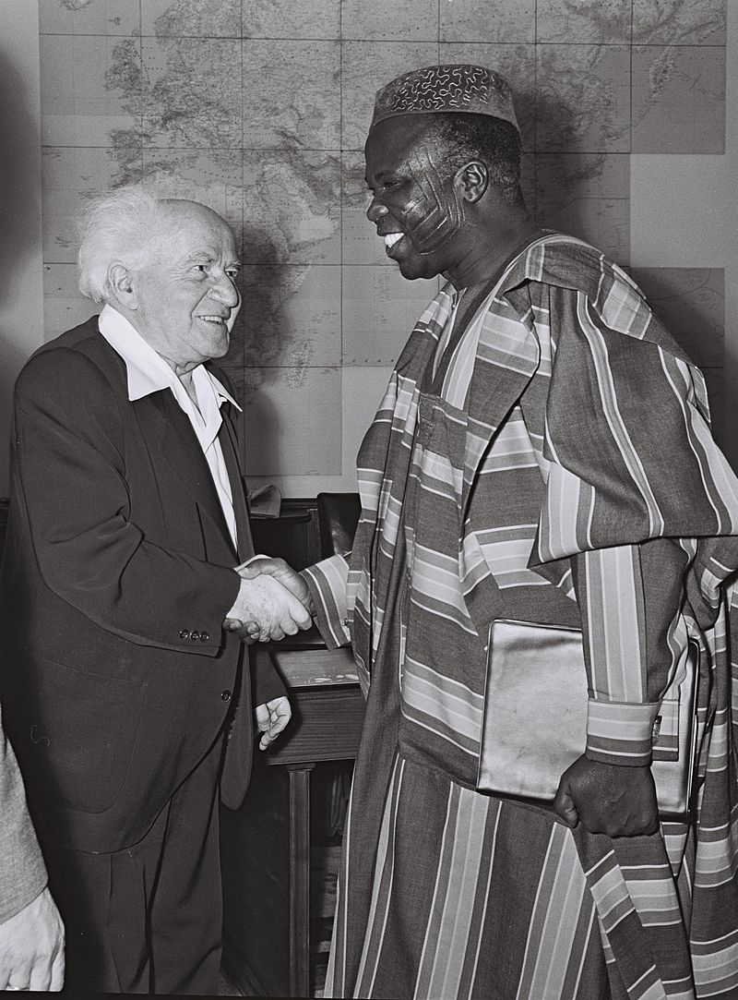

Chief Samuel Ladoke Akintola
The man whose tribal marks his smiles

Samuel Akíntọ́lá with David Ben-Gurion during a visit to Israel in 1961
Chief Samuel Ládòkè Akíntọ́lá, otherwise known as S.L.A. (6 July 1910 – 15 January 1966), was a Nigerian politician, lawyer, aristocrat and orator who was born in Ogbomosho, of the then Western Region. In addition to serving as one of the founding fathers of modern Nigeria, he was also elevated to the position of Oloye Aare Ona Kakanfo XIII of the Yoruba. Read more